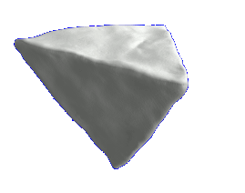
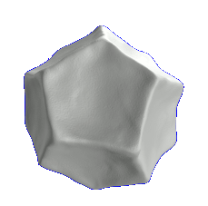

Referenzen
Ausstellungsplanung – vom Grundriss bis zur Vernissage
Die Blenderei bietet Ihnen die Möglichkeit, Ausstellungen professionell zu planen. Anhand des Grundrisses wird der Ausstellungsraum mit dem 3D-Grafik-Programm Blender nachgebaut, wobei auch auf spezielle Bedingungen wie Lichteinfall oder Oberflächenbeschaffenheit der Raum- und Ausstellungselemente u.ä. eingegangen wird. Je nach Stand der Planung können in einem nächsten Schritt Ausstellungsstücke in unterschiedlichen Variationen im Raum oder an den Wänden positioniert und durch den Cameraview betrachtet werden.
Durch die umfangreiche Anwendung ist es möglich, sich in allen gewünschten Perspektiven im Raum zu bewegen und dabei einen realistischen Eindruck von Größenverhältnissen und der Ausstellungskonzeption im Ganzen zu erhalten. Dies ist zudem auch hilfreich, um die Planung von Ausstellungsbegleitern wie Texttafeln oder Schriftplots zu präzisieren, so dass „böse“ Überraschungen beim Aufbau minimiert werden können.
Das Angebotsspektrum der Blenderei reicht dabei vom digitalen Modellbau über die Produktion eines Imagefilms (z.B. für Ausschreibungen im Bereich Ausstellungsarchitektur u.ä.) bis hin zu einer interdisziplinären inhaltlichen und/oder künstlerisch-gestalterischen Zusammenarbeit bei der Ausstellungskonzeption.
Referenzen
Unionsverlag
Rund um die Welt in 40 Jahren: Eine Anwendungsbeispiel im Detail
Die Ausstellung im Haus des Buches leuchtet hinter die Kulissen eines Verlages, der seit 40 Jahren Autoren aller Kontinente beheimatet und von Anfang an die üblichen Grenzen überschritt. Dokumente, Fotos und Hintergründe der Buchherstellung zeigen die Verlagsarbeit im Wandel der Jahrzehnte.
Grundlegende Voraussetzungen

Screenshot des 3D-Modells der Ausstellungsfläche von oben in Drahtgitteransicht.
- Eckdaten
- Haus des Buches Leipzig, 180qm Ausstellungsfläche im Foyer, öffentlich zugänglich, angegliederter Cafébetrieb
- Ausstellungsdauer: März/April 2015; Öffnungszeiten: Mo.–Do. 9–17 Uhr, Freitag 9–15 Uhr

Das mit Blender erstellte, gerenderte Grundmodell zeigt die offene Ausstellungsfläche in Vogelperspektive.

vorhandenes Ausstellungsmobiliar, Hängemöglichkeiten und -bedingungen: Glasvitrinen und Stellwände, Haken und Aufhängungen, Rahmen divers, Hängemöglichkeiten an den Querschienen der Deckenverstrebung
Der Zugang zum Behindertenaufzug und die Türen zum Innenhof müssen frei zugänglich bleiben. Die Säulen sollten möglichst nicht involviert werden.
Planungsphase 1 – Texttafeln und Vitrinen

Nach einer ersten Ideensammlung wird beschlossen, auf die Nutzung der Stellwände zu verzichten. Textinformationen sollen auf eigens dafür angefertigten Bannern/Tafeln gezeigt werden. In Zusammenarbeit mit dem Auftraggeber entstehen erste Skizzen der Texttafeln im Kontext zu den räumlichen Gegebenheiten.

Die Textgestaltung erfolgt durch den Verlag und wird jeweils durch die Blenderei im Modell angepasst.

Steht das Grundmodell des Ausstellungsraumes im 3D-Programm, können zu entwickelnde und bestehende Ausstellungselemente an den unterschiedlichsten Orten im Raum einfach und schnell positioniert werden.


Die Möglichkeit, im 3D-Modell verschiedene Perspektiven einzunehmen, hilft herauszufinden, welche Größe, Gestaltung und Positionierung der Texttafeln im Ausstellungsraum zusammen mit den Vitrinen harmoniert.


Planungsphase 2 – Entwurf, Gestaltung und Positionierung weiterer Ausstellungselemente

Entscheidungsfindung bei der Gestaltung der Eingangswand mit Hilfe des 3D-Modells. Die Hängung von Bildern mit ihren bestehenden Maßen kann mit Blender in verschiedenen Variationen durchgespielt werden, so dass die endgültige Positionierung erheblich erleichtert wird.

Durch die Möglichkeit, im 3D-Modell millimetergenau zu arbeiten, wird die Planung für die Druckvorstufe wesentlich erleichtert z.B. um die richtigen Maße für den Schriftplot festzulegen.

Entwicklung diverser Variationen, um weitere Ausstellungselemente in die Gesamtkomposition einzufügen.

Die 3D-Ansicht hilft einerseits, die richtigen Maße und Formate für einzelne Ausstellungselemente zu finden, die noch zu produzieren sind. Andererseits um bestehende Ausstellungsstücke mit den entsprechenden Maßen so zu positionieren, dass sie in der Gesamtkomposition gut zur Geltung kommen.

Der Vorteil gegenüber einem klassisch angefertigten Modell besteht unter anderem in einer wesentlich höheren Detaillierung und darin, dass in der Planung mühelos jeder beliebige Blickwinkel eingenommen werden kann.

So lässt sich z.B. auch aus Besucherperspektive die Ausstellungkonzeption betrachten …

Planungsphase 3 – Anpassung der Ausstellungselemente an inhaltliche Veränderungen und technische Voraussetzungen

Da die Befestigung der Texttafeln an den Säulen aus gebäudetechnischen Gründen nicht realisiert werden kann, werden verschiedene Alternativen entwickelt.

Eine Beispielvariante, um zu testen, …

… inwiefern sich das relativ massive Erscheinungsbild der Stellwände in das Gesamtkonzept integrieren lassen würde.

Der Weg zum finalen Entwurf

Letzte Anpassungen: Die Texte werden auf flexibel verwendbaren Roll-ups gezeigt …

… und die Präsentation der E-Reader aus inhaltlichen Gründen in die Leseecke integriert.

Ansicht von der rückwärtigen Wand aus gesehen.

Der hintere Bereich bietet jetzt Raum für die große Weltkarte und eine Tafel, die die Autoren und Schauplätze des Verlages zeigen.
Realisierung

GRASSI Museum
Gestaltungsentwurf für das Foyer des GRASSI Museums für Angewandte Kunst anlässlich eines offenen Wettbewerbs im Frühjahr 2014. Im Fokus der Ausschreibung stand die Gestaltung des Foyers insbesondere für Kinder und Familien. Gesucht wurden Gestaltungskonzepte, die der Einstimmung auf den Museumsbesuch dienen, den Eingangsbereich inhaltlich mit der Ausstellung vernetzen und Neugier wecken.
Imagefilm für das Ausstellungskonzept „GRASSI für Kinder“

Bildende Kunst
In der Bildenden Kunst ist die Verwendung von 3D-Grafik-Programmen in diversen Bereichen anzutreffen. Ob für die Realisierung von Animationsfilmen oder die Einbindung spezieller Effekte in klassische Filmformate, Blender liefert eine umfangreiche Infrastruktur, um unterschiedlichste Vorhaben zu realisieren.
Auch für den Bau raumgreifender Installationen oder Skulpturen ist Blender das perfekte Tool, um künstlerische Vorhaben im Voraus zu testen. Insbesondere die nahezu unendlichen Materialoptionen in Blender wie auch die Möglichkeit, sich als Besucher_in im 3D-Modell die Installation oder Skulptur von allen Seiten zu betrachten, können die Planung künstlerischer Projekte erleichtern. In enger Zusammenarbeit mit den Künstler_innen fertigt die Blenderei ein Modell des Ausstellungsraumes und der Installationselemente an, so dass verschiedene Installationsvarianten durchgespielt werden können.
Nicht zuletzt dient Blender als Schnittstelle für die Weiterverarbeitung von 3D-Scans und die Vorbereitung von 3D-Drucken. Auch in diesem Bereich unterstützt die Blenderei nicht nur Künstler_innen in der Umsetzung ihrer Vorhaben.
Referenzen
Elli Kuruş

Platonische Körper des Künstlerkollektivs Elli Kuruş. Hierfür wurden die handgeformten Platonischen Körper mit dem 3D-Scanner erfasst und die Daten anschließend in Blender bearbeitet und animiert.

